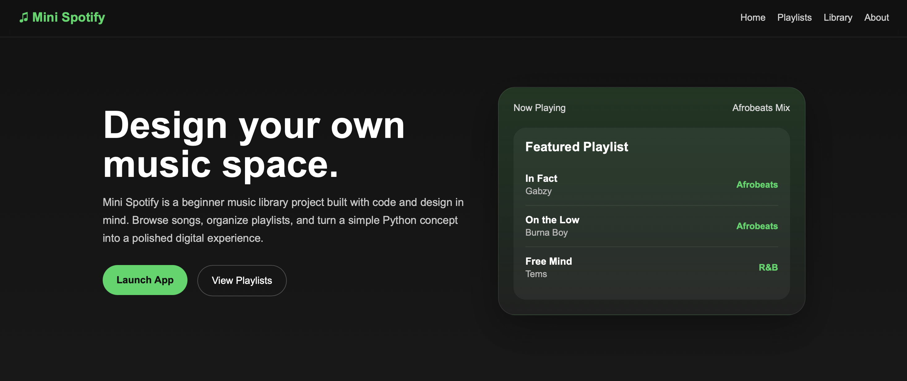

Frontend • UI/UX • Interaction
Mini Spotify
A music-inspired web project that recreates a playful Spotify-style experience through interface design, interaction, and front-end development.

Overview
A playful music interface built with code.
Mini Spotify is a front-end project focused on practicing layout, visual hierarchy, interaction, and music-based UI design. The project helped me explore how design details can make a simple web experience feel more polished and engaging.
Goal
“Build a fun, interactive music experience with a clean visual identity.”
Visuals
Project snapshots.

Explore
View the project.
Reflection
What this project taught me.
This project helped me strengthen my front-end development skills while thinking more intentionally about layout, interaction, and visual consistency. It also gave me more practice turning a creative idea into a working web experience.